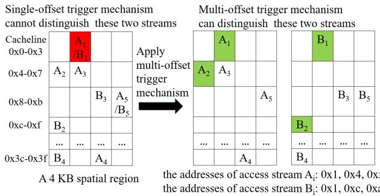
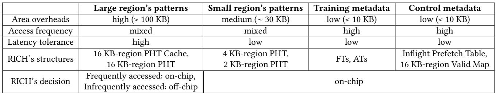
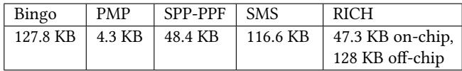

RICH Prefetcher: Storing Rich Information in Memory to Trade Capacity and Bandwidth for Latency Hiding 通俗讲解¶
0. 整体创新点通俗解读¶
痛点直击 (The "Why")
传统硬件预取器（Prefetcher）在设计上陷入了两难困境： - 为了省面积，牺牲了能力：像 Bingo、SMS 这类先进的空间预取器，为了控制宝贵的 on-chip area 开销，通常只敢在一个固定的 4KB 页内学习访问模式。这就像是一个视力很好的人，却被强制戴上了一个只能看眼前一米的隧道视野眼镜。当程序的数据结构跨越多个页面（比如一个大对象分布在16KB空间里），这种预取器就完全“看不见”了，导致 coverage（覆盖率）严重不足。 - 为了追求数量，牺牲了质量：如果简单地把预取区域扩大到16KB，问题又来了。仅凭第一次访问的地址（PC, offset）就去预测后面整个16KB区域的访问模式，会遇到大量“common-origin, later-divergent”（同源异流）的情况——即很多不同的数据流都从同一个地方开始访问，但后续走向完全不同。这会导致 accuracy（准确率）暴跌，产生大量无用的预取，不仅浪费 bandwidth，还会污染缓存。
更根本的问题是，现代和未来的内存系统（如 CXL-based memory pooling, NVM）正朝着 高带宽、大容量、高延迟 的方向发展。旧的预取器设计理念（极度吝啬元数据）已经无法充分利用这种新硬件的优势来隐藏越来越长的 memory access latency。
通俗比方 (The Analogy)
想象你是一个图书管理员（Prefetcher），负责在读者（CPU）需要之前，把书（数据）从远处的仓库（Main Memory）搬到手边的阅览室（Cache）。
- 老派管理员（传统预取器）：他有一个很小的记事本（on-chip storage），只能记录“某某教授（PC）每次来都会拿走A书架（4KB页）上的第3、5、7本书”。这个方法很省纸，但如果教授这次要研究一个大课题，需要A、B、C三个书架（16KB区域）的书，管理员就傻眼了，因为他的记事本没地方记这么复杂的模式。
- 冒进的管理员（简单扩大区域）：他换了个大记事本，开始记录“A书架+B书架+C书架”的组合。但他有个坏习惯：只要看到教授拿了A书架的第一本书，就立刻把ABC三个书架的所有书都搬过来。结果发现，有时候教授只是顺手拿一下A书架的书，根本不需要后面的，导致阅览室堆满了没用的书，真正需要的书反而没地方放了。
RICH 的管理员则非常聪明： 1. 他有不同尺寸的搬运策略：对于小需求（2KB/4KB），他动作快、覆盖广，看到一点苗头就搬；对于大需求（16KB），他非常谨慎，一定要看到教授连续拿了好几本（比如5本）来自这个大区域的书，才确认教授真的要搞大项目，然后才一次性把整个区域的书高效地搬过来。 2. 他有分层的记事系统：他把最常用、最重要的大项目清单（高频16KB模式）记在手边的小本子上（on-chip cache）。那些不常用的、生僻的大项目清单，他则存放在仓库里的一个专用文件柜里（off-chip main memory）。虽然去仓库拿清单要花点时间，但因为他只在确认是大项目时才去拿，而且大项目本身能带来巨大的收益，这点等待时间完全值得。
关键一招 (The "How")
RICH 的核心创新在于，它没有在“小而精”和“大而全”之间做非此即彼的选择，而是通过两个精妙的设计，将二者动态结合：
- 多尺度触发机制（Multi-level Trigger Mechanism）：
- 对于 2KB/4KB 小区域，采用 coverage-first 策略。触发条件宽松（如 Bingo 的
(PC, address)或(PC, 3 offsets)），确保能捕捉到尽可能多的访问机会，即使偶尔出错，代价也很小。 - 对于 16KB 大区域，采用 accuracy-first 策略。触发条件极其严格，必须观察到 (PC, 5 offsets) 这样多的访问足迹后，才认为模式足够可靠，可以发起大规模预取。这从根本上解决了大区域预取准确率低的难题。
-
当多个区域同时被触发时，通过一个 固定优先级仲裁（2KB-(PC,address) > 16KB > 4KB > 2KB-(PC,offset)）来决定执行哪个，避免了重复和冲突。
-
分层元数据存储（Hierarchical Metadata Storage）：
- 作者并没有把所有元数据都塞进昂贵的 on-chip 存储，而是巧妙地利用了16KB模式本身的特性：它们 访问频率低、单次收益高、对延迟容忍度高。
- 因此，只在片上保留一个很小的 16KB PHT Cache（256项），用于存放高频模式。
- 绝大部分低频的16KB模式被卸载（offload）到 main memory 中。通过一个 Valid Map 和 prefetch count threshold（阈值为30）机制，确保只有那些值得的（能预取超过30行数据的）模式才会被写入或读取主存，极大地减少了不必要的 off-chip 访问开销。

Figure 4: Achieving high accuracy in large spatial regions and high coverage in small spatial regions by using different numbers of trigger offsets Figure 5: Placing 16 KB PHT off-chip keeps most prefetch opportunities, even with additional memory access latency
这张图清晰地表明，即使加上50ns的额外延迟，将16KB PHT放在片外也只会损失不到15%的预取机会，证明了该设计的可行性。
最终，RICH 通过这种“小区域广撒网，大区域精耕细作，并用分层存储降低成本”的策略，在几乎不增加片上面积（on-chip area）的前提下，显著提升了 coverage 和 timeliness，从而在高延迟内存系统中获得了远超现有技术的性能优势。
1. 多尺度空间预取与多偏移触发机制 (ELI5)¶
痛点直击
- 传统的空间预取器（比如 Bingo、SMS）通常只盯着 4KB 这一个固定区域大小干活，这在现实中非常“难受”。
- 顾此失彼：对于访问模式跨越多个页面的大型数据结构（比如科学计算中的大数组），4KB 的视野太窄，导致 覆盖率 不足，很多本该预取的数据没抓到。
- 浪费带宽：反过来，如果强行用一个很大的区域（比如 16KB）去预取所有东西，一旦预测错了，就会拉回一大堆 无用数据，严重 污染缓存 并 浪费宝贵的内存带宽。
- 触发机制太粗糙：老方法通常只看第一次访问的偏移量
(PC, offset)或完整地址(PC, address)就决定预取整个区域。但现实程序里，很多不同的访问流可能从同一个起点出发，很快就分道扬镳了（见图2）。这种“同源异流”的情况会让大区域预取的 准确性 暴跌。

Figure 2: The multi-offset trigger mechanism can distinguish "common-origin, later-divergent" access streams
通俗比方
- 想象你是个图书管理员，负责给读者提前把书从仓库（主存）搬到阅览室（缓存）。
- 老派管理员：他只会按“标准书架”（4KB页）来搬书。如果读者要看一本超大画册（16KB数据），他得跑四次才能搬完，等书都齐了，读者早就等烦了（timeliness 差）。
- 莽撞的管理员：他听说有大画册，就不管三七二十一，只要看到有人进美术区（第一次访问），就把整个美术区的书（16KB）全搬过来。结果发现读者只是来查个目录，白忙活一场，还把阅览室堆满了没用的书（accuracy 低，cache pollution）。
- RICH管理员：他聪明多了。他手里有三种尺寸的推车：小（2KB）、中（4KB）、大（16KB）。
- 对于不确定的小需求，他先用小推车快速响应，保证不漏掉任何读者（coverage-first for small regions）。
- 对于可能的大需求，他不会立刻行动。他会先观察，看到同一个读者连续拿了5本相关的书（5 offsets），才确信他真的要研究这个专题，然后才推出大推车一次性把全套资料搬来（accuracy-first for large regions）。
- 这样，他既满足了普通读者的即时需求，又高效地服务了深度研究者，还避免了无谓的体力浪费。
关键一招
- 作者没有沿用“一刀切”的区域大小和触发逻辑，而是做了一个精妙的 分而治之 + 动态仲裁 的设计。
- 替换触发条件：对于 16KB 这样的大区域，作者彻底抛弃了单点触发的旧思路，将其替换为 多偏移触发 (multi-offset trigger) 机制。必须观察到
(PC, 5 offsets)这样更丰富的上下文，才认为模式足够稳定，值得冒险进行大范围预取。这从根本上解决了“同源异流”导致的误判问题。 - 扭转区域策略：作者将不同尺寸的区域赋予了截然不同的使命：
- 2KB/4KB 区域：采用轻量级触发（如
(PC, address)或(PC, 3 offsets)），目标是 最大化覆盖率，确保不放过任何潜在的访问模式。 - 16KB 区域：采用重量级触发
(PC, 5 offsets)，目标是 最大化准确性，只在高度确信时才启动，以充分利用高带宽优势。 - 引入仲裁机制：当多个区域同时被触发时，系统会根据预设的 优先级（2KB-(PC,address) > 16KB > 4KB > 2KB-(PC,offset)）和 去重逻辑（大区域预取会阻止其覆盖范围内的小区域预取）来选择最优方案，避免了资源内耗。

Figure 3: By using more access offsets in a trigger, we can trade off between the accuracy and coverage of prefetching. Specifically, a), b),and c) correspond to 16 KB-region, 4 KBregion, and 2 KB-region.
这种设计的核心在于，它不再试图用一个僵化的模型去拟合所有程序，而是通过 多尺度感知 和 自适应触发，让预取器能像一个经验丰富的专家一样，在 覆盖率 和 准确性 这对天然矛盾的目标之间，根据不同场景动态地找到最佳平衡点。最终结果就是，在常规系统中性能提升 3.4%，而在高延迟内存系统中，优势更是扩大到 8.3%。
2. 基于优先级的区域仲裁策略 (ELI5)¶
痛点直击 (The "Why")
- 传统的空间预取器（如 Bingo）通常只在一个固定的 4KB 区域内工作。这就像你只能用一种尺寸的渔网捕鱼——遇到小鱼群浪费网眼，遇到大鱼群又捕不全。
- RICH 的核心思想是同时使用 2KB、4KB、16KB 三种“渔网”来适应不同程序的访存模式。但这就引出了一个新麻烦：当同一个内存区域同时被多个“渔网”盯上时（比如一个 16KB 大网和它内部的几个 2KB 小网都触发了），如果全都去抓，就会造成严重的 冗余预取。
- 冗余预取的危害极大：
- 浪费宝贵的 off-chip 带宽，把通道塞满无用数据。
- 污染 cache，把真正有用的数据挤出去。
- 最终导致 性能不升反降，好心办坏事。
通俗比方 (The Analogy)
- 想象一个高效的物流调度中心。仓库里有不同规格的打包区：小件区 (2KB)、标准区 (4KB) 和 大宗货物区 (16KB)。
- 当一批货物（内存访问）到来时，系统会判断这批货最适合在哪个区打包。但如果判断逻辑混乱，可能会出现同一批货既在小件区被打包成几十个小包裹，又在大宗区被打包成一个大集装箱。
- 这显然极其低效。基于优先级的区域仲裁策略就像是一个聪明的调度员，他的规则是：
- 如果这批货能被识别为一个高价值、高确定性的完整订单（对应 2KB-(PC, address) 触发，因为它捕捉了精确的时空局部性），就优先用小件区快速处理。
- 否则，就看它是否符合大宗货物的特征（对应 16KB 区域，由多偏移验证保证了高 accuracy）。如果是，就直接用一个大集装箱搞定，省时省力。
- 只有在以上都不满足时，才退而求其次用标准区或最普通的打包方式。
- 这个调度员还有一个铁律：一旦决定用大集装箱发货，就立刻封锁里面所有的小件打包位，防止重复劳动。这就是文中的 去重机制 (de-duplication mechanism)。

Figure 8: The Region Arbitration unit selects the appropriate region to prefetch (Step P3)
关键一招 (The "How")
- 作者没有简单地让所有区域“自由竞争”，而是设计了一个 固定优先级 + 覆盖检查 的两层仲裁逻辑。
- 第一层：基于准确率和成本的静态优先级排序。这个排序不是拍脑袋定的，而是基于对不同区域特性的深刻洞察：
- 2KB-(PC, address): 虽然区域小，但触发条件苛刻（需要精确地址），accuracy 极高，且误判成本（只取2KB）很低，所以给最高优先级。
- 16KB: 区域大，一次预取收益高（timeliness 好），但通过 multi-offset trigger 机制保证了其 accuracy 也超过90%，因此排第二。
- 4KB: 作为折中方案，排第三。
- 2KB-(PC, offset): 触发条件最宽松，coverage 高但 accuracy 相对最低，误判成本虽小但容易泛滥，所以优先级最低。
- 第二层：动态覆盖检查 (overlap check)。即使一个低优先级的请求先到，如果此时一个高优先级的请求覆盖了同一片区域，低优先级的请求也会被 block 掉。反之，如果一个 16KB 请求已经发出，那么在其完成前，该区域内的所有 4KB 和 2KB 请求都会被禁止。
- 作者最关键的扭转在于：将“选择哪个区域预取”这个问题，从一个复杂的在线优化问题，简化为一个基于离线分析得出的、高效且可预测的 静态优先级决策，并辅以简单的硬件表（Inflight Prefetch Table）来执行去重。这既保证了性能，又控制了硬件开销。
3. 分层元数据存储架构 (ELI5)¶
痛点直击
传统硬件预取器（如 Bingo、SMS）为了控制 on-chip area overhead，把所有元数据都塞在片上，这导致了一个根本性的矛盾：它们只能处理 4KB 以内的小区域空间局部性。但现实 workload 中，很多程序（比如科学计算、图处理）的访问模式跨越多个页面，呈现出 16KB 甚至更大的空间局部性。如果强行用小区域去覆盖，就会出现“只见树木，不见森林”的问题——coverage（覆盖率）极低。可如果直接把大区域的元数据（比如 16KB 的 bit-vector pattern）全放片上，那动辄上百 KB 的存储开销是处理器设计无法承受的奢侈。更麻烦的是，如果简单地把所有元数据都扔到 off-chip memory，每次预测都要去主存读一次，那 metadata access latency 本身就可能吃掉预取带来的所有收益，得不偿失。
通俗比方
想象你是一个图书管理员（Prefetcher），负责给读者（CPU）提前准备好他们可能要看的书（data）。
- 以前的管理员（传统预取器）只有一个很小的办公桌（on-chip storage）。他只能把最热门的几本畅销书（small-region patterns）的目录摘要放在桌上，方便快速查找。但他完全没法处理那些需要整套丛书（large-region patterns）的读者请求，因为丛书目录太厚，桌子放不下。
- RICH 的管理员则聪明得多。他依然保留一张小办公桌，上面只放两类东西：一是最畅销的单本书目录（2KB/4KB patterns），二是一个 “高频丛书索引缓存”（on-chip PHT cache for 16KB）。对于绝大多数冷门的丛书目录，他并不放在桌上，而是存在图书馆后面的大型仓库里（off-chip main memory）。当他接到一个可能需要丛书的请求时，先看一眼自己的小索引缓存。如果有，立刻行动；如果没有，他才去仓库调取。关键是，他知道调取一套丛书本身就能服务读者很久，所以即使去仓库拿目录花点时间（latency），只要这套书真的有用，总体还是赚的。这就是利用了 大区域预取天然的高延迟容忍度。
Figure 4: Achieving high accuracy in large spatial regions and high coverage in small spatial regions by using different numbers of trigger offsets Figure 5: Placing 16 KB PHT off-chip keeps most prefetch opportunities, even with additional memory access latency
关键一招
作者并没有把所有元数据平等对待，而是做了一次精妙的 “分类托管”：
- 对元数据进行三维评估：根据 访问频率 (access frequency)、延迟容忍度 (latency tolerance) 和 面积开销 (area overheads) 这三个维度，将元数据拆解。
- 2KB/4KB 区域的模式：
- 特点：访问非常频繁，且预取距离短，对延迟极度敏感。
- 处理：全部放在 on-chip PHT 中，保证最低延迟。
- 16KB 区域的模式：
- 特点：单个模式体积大（256-bit vector），总面积开销巨大；但一旦触发，能预取大量数据，因此对 metadata 的访问延迟有很高的容忍度；并且其访问具有 高度集中性（少数模式覆盖大部分请求）。
- 处理：采用 tiered storage strategy（分层存储策略）。
- 在片上保留一个很小的 PHT Cache（仅256 entries），专门缓存 高频 的 16KB 模式。
- 绝大部分 低频 模式被卸载到 off-chip main memory 中的一个专用区域（128KB）。
- 引入一个 Valid Map（位图）来快速判断某个模式是否存在于主存中，避免无效的 off-chip 访问。
- 更绝的是，只有当一个 16KB 模式的 prefetch count（即 bit-vector 中 '1' 的数量）超过阈值（如30）时，才值得将其写入主存。这相当于设置了一个 ROI（投资回报率）门槛，确保 off-chip 操作的性价比。
这种设计的核心逻辑转换在于：将“存储位置”的决策从“能不能放得下”转变为“值不值得为它付出延迟代价”。通过承认并利用不同类型元数据的内在属性差异，RICH 用极小的片上代价（仅增加一个小型缓存和 Valid Map），就撬动了 off-chip 内存的巨大容量，从而支持了性能更强的大区域预取，完美解决了传统方案的两难困境。

Table 2: Categorization of RICH's metadata
4. 片外元数据访问过滤机制 (ELI5)¶
痛点直击
- 传统做法里，只要有个新的 16KB-region pattern（一个256-bit的位向量），就一股脑地往片外主存里读或写。这在直觉上很“完整”，但实际运行起来非常难受。
- 难受在哪？一次片外访问很可能导致两次 row buffer miss。在未来的高延迟内存系统里，这个代价极其高昂。
- 更要命的是，很多 pattern 根本不值得这么干。比如一个 pattern 里只有两三个 '1'，意味着它只会触发两三次预取。为了这点微薄的收益，去冒两次 row buffer miss 的巨大风险，完全是得不偿失，甚至会拖累整体性能。
通俗比方
- 这就像你开了一家快递中转站（CPU），旁边有个超大仓库（Off-chip Memory）。每次有新包裹（pattern）进来，你都得派一辆车（memory access）去仓库登记一下。
- 但如果是个只值几块钱的小包裹，派车过去一趟的油钱（row buffer miss penalty）可能比包裹本身还贵。聪明的做法是：只给那些价值超过30块钱的大包裹（prefetch count > 30）。这样，你的车队资源（memory bandwidth）就能集中在真正能赚钱的业务上，避免被琐碎小事拖垮。
关键一招
- 作者没有改变 pattern 的学习和存储逻辑，而是在决定是否进行片外I/O操作的那个临界点，插入了一个极其简单的过滤器（filtering mechanism）。
- 具体来说：
- 在训练阶段，当一个 16KB-region 的 pattern 被最终确定后，系统会立刻计算其预取计数（prefetch count），也就是位向量中 '1' 的个数。
- 只有当这个计数超过预设阈值（例如30），系统才会允许将这个 pattern 写入（spill）到片外的 PHT 中。
- 同样，在预测阶段，即使片上缓存没命中，系统也会先检查片外 Valid Map。但即便 Valid Map 显示存在，如果当初写入时就没达标，这个 pattern 根本就不会存在于片外，自然也就不会触发昂贵的加载请求。
- 这一招的精妙之处在于，它用一个几乎零成本的计数判断，就规避了大量潜在的、高成本的无效片外访问，完美地平衡了收益（prefetch gain）与风险（row buffer miss penalty）。

Table 6: Comparison of area overheads
如上表所示，RICH 通过这种机制，将片上存储开销从 Bingo 的 127 KB 大幅降低到 47 KB，同时仅使用 128 KB 的片外空间，就实现了超越所有对比方案的性能。这充分证明了该过滤机制的有效性。